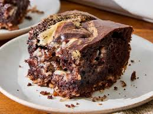

Home
German Chocolate Dump Cake

Description
This German Chocolate Dump Cake recipe is a simplified, one-pan dessert that captures the classic falvors of traditional German chocoalte cake. Rich chocolate, coconut, and pecans, without the complexity of layering or frosting. It uses a boxed devil's food cake mix as the base, combined with ingredients like sweetend coconut, chopped pecans, chocolate chips, cream cheese, butter, and powdered sugar to create a dense, gooey texture throughout. As it bakes, the components melt together into pockets of creamy, caramel-like filling, giving the cake a rich, indulgent consistency.
What makes this recipe stand out is its "dump cake" approach: ingredients are layered or "dumped" into the pan with minimal mixing, making it quick and beginner-friendly while still delivering a decadent result. The finished cake is warm, sweet, and slightly nutty, with a soft chocolate base and textured topping from the coconut and pecans. It's designed as an easy, crowd-pleasing dessert that doesn't require frosting, yet still feels rich and satisfying enough for gatherings or special occasions.
Ingredients
- 1 2/3 Cups Toasted Pecans, Chopped, Divided
- 1 Cup Sweetened Flaked Coconut
- 1 (2-layer size) Packge Devil's Food Cake Mix
- Eggs, Oil, and Water as Specified for the Cake Mix
- 1 (8 ounce) Package Cream Cheese, Softened
- 1/2 Cup Butter, Melted
- 2 Teaspoons Vanilla Extract
- 1/4 Teaspoon Salt
- 1 Cup Powdered Sugar
- 2/3 Cup Semisweet Chocolate Chips
Directions
- Preheat the oven to 350 degrees F (175 degrees C). Grease a 9x13-inch baking pan.
- Sprinkle 1 cup pecans and coconut in the prepared pan.
- Prepare cake mix according to the package directions. Pour batter over coconut and pecans in the pan.
- Beat cream cheese with an electric mixer in a bowl until smooth, about 30 seconds. Beat in melted butter, vanilla and salt. Beat in powdered sugar until smooth. Stir in chocolate chips and remaining 2/3 cups pecans.
- Drop spoonfuls of the cream cheese mixture over the cake batter. Swirl the cream cheese mixture and cake batter together using a butter knife or thin spatula.
- Bake in the preheated over until a toothpick inserted in the center comes out clean, 32 to 38 minutes.
- Cool completely on a wire rack.